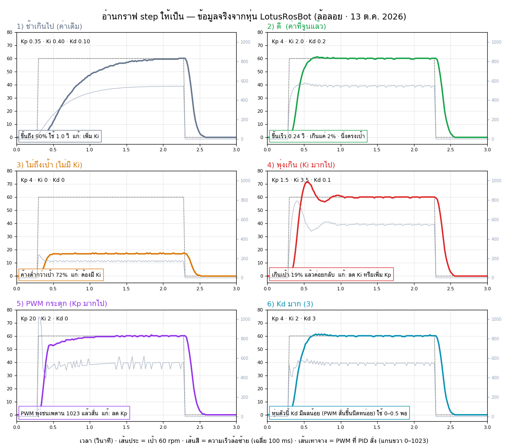

🔧 LotusRosBot — คาลิเบรต + จูน PID
ใช้สาย USB เดียวกับ micro-ROS — ปิด agent/ภารกิจก่อน (bash ~/stop.sh all) · ปุ่ม BTN บนบอร์ด = หยุดทุกอย่าง · มอเตอร์หยุดเองถ้าหน้านี้เงียบเกิน 0.3 วินาที
1 · ⚙️ หมุนมอเตอร์ (Spin motors · กดค้าง)● กำลังทำงาน
▲ สองล้อเดินหน้า · ◀ ล้อขวาอย่างเดียว · ▶ ล้อซ้ายอย่างเดียว · ถ้าล้อหมุนกลับทิศ แก้ MOTOR1_INV / MOTOR2_INV
2–3 · 🔄 CPR อัตโนมัติ (Sample CPR / CPR x5 · หมุนเต็มกำลัง)● กำลังทำงาน
| รอบ | ซ้าย tick | CPR ประมาณ | rpm จริง | ขวา tick | CPR ประมาณ | rpm จริง |
|---|
CPR ที่ได้เป็นค่าประมาณ (คิดจาก rpm ตามสเปก × แรงดัน) — ค่าที่แม่นใช้เมนู 7 · ที่มีประโยชน์กว่าคือ rpm จริงตอน PWM เต็ม เทียบกับ MOTOR_MAX_RPM
4 · 🦾 Servo (Servo check)● กำลังทำงาน
5 · 📟 สถานะสด (Sensor check)● กำลังทำงาน
6 · 💡 LED · 🔊 เสียง (LED test)● กำลังทำงาน
7 · 🔢 นับ tick → CPR (Count ticks · หมุนล้อด้วยมือ)● กำลังทำงาน
ตอนล้อหยุด เฟิร์มแวร์ "เบรกไฟฟ้า" (ขั้วมอเตอร์ถูกต่อเข้าหากัน) หมุนมือจะฝืดมาก — ก่อนนับให้กด "ปล่อยล้อ" · เมนู 7 บน OLED ปล่อยให้เอง (v2026.10.14d)
| tick | CPR วัดได้ | ในโค้ด | |
|---|---|---|---|
| ซ้าย M1 | – | – | 958 |
| ขวา M2 | – | – | 925 |
8–9 · 📶 เครือข่าย / SSH (ที่บอร์ดได้รับจาก Jetson)● กำลังทำงาน
ระหว่างเชื่อมต่อหน้านี้ service lotus-netinfo หยุดส่ง (พอร์ตไม่ว่าง) — "live" จะเป็น "ไม่" ได้ ไม่ใช่ปัญหา
10 · 📈 จูน PID ความเร็วล้อ (PID tune · ทดสอบแบบขั้นบันได)● กำลังทำงาน
| Kp | Ki | Kd | |
|---|---|---|---|
| ล้อซ้าย | |||
| ล้อขวา |
ที่มา: –
| รอบ | ค่า PID (ซ้าย / ขวา) | ล้อ | ขึ้นถึง 90% | พุ่งเกิน | ขาดจากเป้า | นิ่งใน ±5% | แกว่ง |
|---|
วิธีจูน (ล้อลอย)
- ทดสอบค่าเดิมก่อน 1 รอบ (60 rpm ทั้งสองล้อ) ดูกราฟ
- ขึ้นช้า / ไปไม่ถึง → เพิ่ม Kp ทีละ ~20% · สั่น/แกว่งรอบเป้า → ลด Kp
- ค้างต่ำกว่าเป้า (ขาดจากเป้า > 3%) → เพิ่ม Ki · พุ่งเกินมาก (> 10%) → ลด Ki
- พุ่งเกินแม้ Ki พอดี → เพิ่ม Kd ทีละน้อย · ถ้ากราฟ PWM กระตุก → ลด Kd
- ให้สองล้อมีกราฟใกล้กัน (หุ่นจะออกตัวตรง) · ลองทั้ง 30, 60, 90 rpm และค่าติดลบ (ถอย)
- พอใจแล้วกด 💾 บันทึกลงบอร์ด (ใช้ทันทีทั้งโหมด ROS2 แม้ยังไม่แก้โค้ด) แล้วคัดลอกบรรทัดด้านล่างไปใส่
include/lotusrosbot_config.hเพื่อเก็บถาวร
คัดลอกไปใส่ lotusrosbot_config.h
📖 อ่านกราฟ step ให้เป็น — กราฟที่ดีหน้าตาแบบไหน● กำลังทำงาน

| ดูอะไร | กราฟที่ดี (เป้าของหุ่นตัวนี้) | ถ้าไม่ได้ ให้ปรับ |
|---|---|---|
| ขึ้นถึง 90% ของเป้า | ≤ 0.3 วินาที | ช้า → เพิ่ม Ki (ตัวหลัก) · Kp ช่วยช่วงแรก |
| พุ่งเกินเป้า | ≤ 5% (ไม่เกิน 10%) | เกินมาก → ลด Ki หรือเพิ่ม Kp เล็กน้อย |
| ขาดจากเป้าตอนนิ่ง | ≤ 2% | ค้างต่ำกว่าเป้า → เพิ่ม Ki (ถ้า Ki = 0 จะไม่มีวันถึงเป้า) |
| นิ่งในช่วง ±5% | ≤ 0.4 วินาที · ไม่แกว่งขึ้นลง | แกว่งรอบเป้า → ลด Ki / เพิ่ม Kd เล็กน้อย |
| กราฟ PWM | ขึ้นเร็วแล้วเรียบ · ไม่ชนเพดาน 1023 นาน · ไม่กระตุก | กระตุก/ชนเพดาน → ลด Kp · เป็นหนาม → ลด Kd |
| ล้อซ้ายเทียบขวา | เส้นซ้อนกัน | ต่างกัน → จูนแยกล้อ (ปลดติ๊ก "ใช้ค่าเดียวกัน") |
ลำดับที่แนะนำ: ① ทดสอบค่าเดิม → ② เพิ่ม Ki จนขึ้นเร็วแต่เกินไม่ถึง 10% → ③ ปรับ Kp ให้เกินน้อยลง → ④ Kd 0–0.5 ให้นิ่งเร็ว → ⑤ ลอง 30 / 90 / −60 rpm ต้องดีทุกค่า → ⑥ ทดสอบวิ่งบนพื้นจริง (มีภาระ) แล้วค่อยบันทึก · ค่าที่ได้วันนี้: เดิม 0.35/0.40/0.10 ขึ้นถึง 90% ใน 1.0 วิ → 4 / 2.0 / 0.2 ใน 0.24 วิ
⚙️ ค่าหุ่น (lotusrosbot_config.h) + อัปโหลดเฟิร์มแวร์● กำลังทำงาน
ขา GPIO และค่าที่แก้จากเว็บไม่ได้ (ดูอย่างเดียว)
(ยังไม่ได้เปลี่ยนอะไร)
(ยังไม่มีงาน)
↩️ ย้อนเฟิร์มแวร์เวอร์ชันก่อนหน้า (~/fw_backup)
ย้อนเฉพาะเฟิร์มแวร์ในบอร์ด — ไฟล์ config ไม่ย้อนตาม (ย้อนได้จาก .bak_web_… หรือ git) · เวอร์ชันก่อน 14c ต่อหน้าเว็บนี้ไม่ได้
ขั้นตอน: แก้ค่า → ① ดูสิ่งที่จะเปลี่ยน → ② บันทึก (สำรองไฟล์เดิม + git commit ในเครื่อง) → ③ Build + อัปโหลด (~2 นาที · ต้องปิด agent/ภารกิจ · สำรอง .bin ให้เอง) → บอร์ดรีบูตแล้วหน้าเว็บต่อกลับเอง · ค่า PID ไม่ต้องอัปโหลดก็ได้ (กด 💾 บันทึกลงบอร์ด)
🧪 ทดสอบ T1–T7 (โหมด ROS2 · ใช้ระบบจริงเหมือนตอนวิ่งงาน)● กำลังทำงาน
เปิดระบบ = บอร์ดรีบูตเข้าโหมด ROS2 → เปิด agent + bringup (LiDAR, odom) ให้เอง ~20 วินาที · หุ่นต้องจอดนิ่งช่วงเปิด · ค่า PID ที่ใช้ = ค่าที่ "บันทึกลงบอร์ด" (ถ้าไม่ได้บันทึก = ค่าในโค้ด) · ทดสอบเสร็จกด "ปิดระบบ ROS2" ก่อนกลับมาใช้การ์ด 1–10
| ทดสอบ | ทำอะไร | เกณฑ์ผ่าน | ก่อนแก้ (13 ต.ค.) | ผลล่าสุด | |
|---|---|---|---|---|---|
| T1 ตรวจระบบ | node, ความถี่ odom/imu/scan, yaw จากบอร์ด · ไม่ขยับ | ครบ 5 ข้อ | – | – | |
| T2 มุมไหลตอนจอด | วัด yaw 2 นาที · ไม่ขยับ | ≤ 1° | 0.00° (3 นาที, 14a) | – | |
| T3 หมุน 360° | ซ้าย 360° แล้วขวา 360° · วัดมุมคลาดด้วย LiDAR | คลาด ≤ 5° | (ยังไม่เคยวัดด้วย LiDAR) | – | |
| T4 สี่เหลี่ยมช้า | ด้าน 0.5 m · 0.10 m/s · 1 รอบ | ทิศเพี้ยน ≤ 8°/รอบ | −16°/รอบ (odom) | – | |
| T5 สี่เหลี่ยมเร็ว | ด้าน 1 m · 0.34 m/s (100%) · 3 รอบ | ทิศเพี้ยน ≤ 8°/รอบ | −21° ถึง −30°/รอบ (odom) | – |
(ยังไม่มีการทดสอบ)
T6–T7 (ทำในสนาม · ใช้ RViz) — ติ๊กเมื่อผ่าน